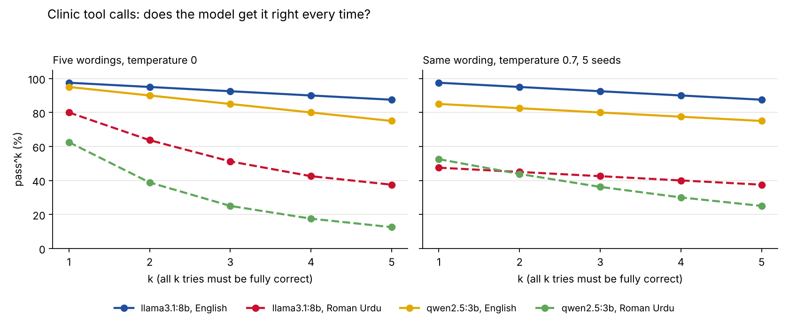

Experiment · Agentic AI · Roman Urdu
Right once, wrong next time: small AI models got Roman Urdu clinic bookings right all five times on only 13-38% of tasks
A pass^k follow-up to tau-bench: how repeatable are clinic tool calls from two local models, in English and Roman Urdu?
By Muzammal Hussain · 14 November 2026 · Research update
An AI agent that books the right appointment four times out of five is not one you can leave alone at a clinic desk. Most tool-use scores give each task one try. The tau-bench paper (Yao et al., 2024) proposed pass^k instead: the chance that k tries of the same task are all correct. I applied it to eight clinic tool calls from my earlier self-correction test, with two small local models, in English and in Roman Urdu as people actually type it.
Key findings
- English calls were mostly repeatable: 87.5% of tasks were right all five times for llama3.1:8b and 75% for qwen2.5:3b.
- Roman Urdu calls were not: only 12.5% to 37.5% of tasks were right all five times.
- One try hides the problem: with five wordings of each request, qwen2.5:3b got 62.5% of single tries right but only 12.5% of tasks right every time.
- Rewording and resampling fail differently: new wordings made Roman Urdu tasks right some of the time; resampling the same wording left some tasks wrong every time, so a retry would not have helped.
Setup
The eight tasks are clinic tool calls: booking an appointment, recording vitals, a pain score, a reminder, a refund, a cancellation, a patient search and an exercise log. Each has a fixed schema and a known correct answer. A try passes only if the JSON is valid and every value is right.
Each task was repeated five times in two ways. In the wording condition the model saw the original request and four rewordings with the same meaning, at temperature 0; the Roman Urdu wordings use the spellings people really type, such as kr and kar, or nai and nahi. In the sampling condition it saw the original wording five times at temperature 0.7 with five seeds. That is 2 models × 8 tasks × 2 languages × 2 conditions × 5 tries = 320 calls, run with Ollama on a MacBook M4.

Results
| Model | Language | Condition | One try right | All five right | Tasks always / sometimes / never right |
|---|---|---|---|---|---|
| llama3.1:8b | English | Wording | 97.5% | 87.5% | 7 / 1 / 0 |
| llama3.1:8b | English | Sampling | 97.5% | 87.5% | 7 / 1 / 0 |
| llama3.1:8b | Roman Urdu | Wording | 80.0% | 37.5% | 3 / 5 / 0 |
| llama3.1:8b | Roman Urdu | Sampling | 47.5% | 37.5% | 3 / 1 / 4 |
| qwen2.5:3b | English | Wording | 95.0% | 75.0% | 6 / 2 / 0 |
| qwen2.5:3b | English | Sampling | 85.0% | 75.0% | 6 / 1 / 1 |
| qwen2.5:3b | Roman Urdu | Wording | 62.5% | 12.5% | 1 / 7 / 0 |
| qwen2.5:3b | Roman Urdu | Sampling | 52.5% | 25.0% | 2 / 3 / 3 |
Eight tasks give wide intervals: the 95% bootstrap interval for "all five right" spans 37 to 75 points in every row. The gap between English and Roman Urdu is clear; the differences between the two models and between the two conditions are not.
Which fields broke
The failures sat in fields that need interpretation rather than copying: the appointment time ("dhai baje dopehar" for 2:30 pm), the pulse, the pain score, the refund amount, the cancellation reason and the city. The exercise log was right in every one of its 40 tries. With the original Roman Urdu wording and resampling, llama3.1:8b got four tasks wrong all five times: the time, the pulse, the amount and the reason. Those are systematic misreadings, not bad luck, so asking again with a new seed would not have fixed them.
One smaller finding: 150 of the 320 replies wrapped the JSON in code fences although the instruction said not to. The JSON could still be read, but a strict parser would have rejected almost half the replies.
What this means
A single-try accuracy of 80% on Roman Urdu requests sounds usable. Asked whether the same request comes back right every time, the answer for these models is "for about one task in three". For a clinic agent that will see each kind of request many times a day, that second number is the one that matters. Checking the values in code, and sending uncertain Roman Urdu calls to a person, is still needed with models of this size.
Limitations
Eight tasks only, so this is a pilot. I wrote the four extra wordings myself; they are not a sample of real clinic messages. Each call is a single turn, while tau-bench scores whole conversations with a simulated user. Scoring is exact match after light normalisation, so a free-text field written differently but acceptably counts as wrong. Results can differ with other Ollama versions or hardware.
Reference: Yao, S., Shinn, N., Razavi, P. and Narasimhan, K. (2024). τ-bench: A Benchmark for Tool-Agent-User Interaction in Real-World Domains. arXiv:2406.12045.